Guia para iniciar en Linux
Índice
- Manual para instalar linux
- Conociendo Linux/Debian
- Programas compatibles y alternativos
- Conociendo la Terminal
- Archivos, ejecutables y permisos
- Configurarndo APT
- Una introducción a grep
- Primer programa en C
- Primer programa en Python
- Primer programa en Javascript
- Primer programa en R
- Mi primer programa en BASH

This work is licensed under a Creative Commons Attribution 4.0 International License.
Manual para instalar linux
Objetivo
Instalar un sistema operativo de tipo Linux/Debian en tu computadora. Con este sistema operativo tendrás acceso a diversas aplicaciones y programas que serán de gran utilidad para la programación en diversos lenguajes.
Antecedentes
Se le llama sistema operativo a un conjunto de programas sencillos y otras utilidades con el objetivo de hacer de una computadora una herramienta funcional. Existen varios sistemas operativos, entre los más usados se encuentran:
- Windows
- MacOS
- Linux
La familia de sistemas operativos del tipo Linux consiste de varias distribuciones. Entre ellas hay muchas similitudes y algunas diferencias sutiles y otras no tanto.
Para esta práctica hemos elegido la distribución Debian de Linux ya que es muy conocida por su estabilidad y su gran documentación en la red.
Otra de las ventajas que tienen los sistemas Linux es que son sistemas libres (de pago, de uso, de distribución y de modificación), por lo que no será necesario pagar ningún tipo de licencia para su uso.
Alguna de las desventajas de usar esta distribución es que los programas tardan un poco más en poder actualizarse a las versiones más recientes.
Puedes encontrar más información sobre Linux/Debian en los siguentes enlaces:
Práctica
Instalar de manera exitosa el sitema operativo Linux/Debian
Necesitarás de una memoria USB que puedas utilizar y borrar completamente.
Procedimiento:
Crea un instalador con una memoria USB
Desde una computadora con sistema operativo Windows, puedes ayudarte de los siguentes pasos:
- Ingresa a https://www.debian.org/download
- Haz click en "download the .iso file" /debian-12.1.0-amd64-netinst.iso/.
- Si estás usando una computadora con Windows, descarga el programa Win32 Disk Imager.
- Usando Win32 Disk Imager, crea un instalador en la memoria USB con el archivo /debian-12.1.0-amd64-netinst.iso/.
Iniciar el instalador desde el arranque de la computadora
Para iniciar la instalación ahora debes
- Apagar tu computadora.
- Insertar la memoria USB.
- Encender la coputadora.
Si tu instalador USB fue creado exitosamente, verás el menú de instalación del sistema.
¿Qué hacer si no pasa nada diferente?
En este caso se tiene que forzar a la computadora el acceso al BIOS. Generalmente se puede acceder al BIOS presionando alguna de las teclas F2 o F11 justo al encender tu computdora. Una vez dentro del BIOS, habilita la opción de arranque desde USB.
Proceder con la instalación de tu nuevo sistema operativo
Una vez que tienes el menú de instalación, sigue paso a paso las instrucciones. Toma en cuenta lo siguiente:
- Asegura de tener respaldada la información de manera externa, pues es probable que tengas que formatear todo el disco duro de tu computadora.
- Asegura que tienes una buena conexión a internet.
- Si no tienes experiencia con particiones, usa la recomendada por defecto.
- Recuerda de manera particular tu nombre y contraseña de administrador (super user's name & password).
- Existen diferentes entornos de escritorios para Linux/Debian. Nosotros estaremos mostrando principalmente Gnome.
Conclusiones
¡Felicidades!
Ahora tines un sistema operativo libre funcionando en tu computadora.
Conociendo Linux/Debian
Objetivo
Conocer algunos programas para trabajar en Linux/Debian.
Antecedentes
Una vez que tienes un nuevo sistema operativo con un entorno de escritorio gráfico, puedes abrir algunos programas que te ayudarán a administrar tu computadora.
En esta práctica nos concentraremos en tres tareas muy importantes:
- El explorador de archivos y carpetas
- Instalador gráfico de software
- Un editor de texto
Práctica
Explorador de archivos de Gnome
Si instalaste el entordno de escritorio GNOME, Files es el nombre del explorador de archivos y carpetas por predeterminado aunque también es conocido como Nautilus. Este programa te permitirá accesar y organizar tus archivos y su uso es muy intuitivo.
Crear una carpeta de trabajo
Realiza los siguientes pasos:
- Localiza la carpeta home.
- Localiza la carpeta Documents.
- Dentro de la carpeta Documents, crea una nueva carpeta llamada Practicas.
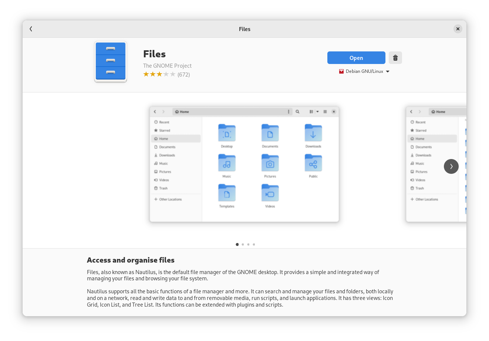
Instalar un nuevo programa (usando software)
El programa Software te permite encontrar e instalar/desinstalar programas en Linux/Debian. Lo hace de manera segura e intuitiva presentando iconos grandes y descripciones útiles de las distintas apps o los paquetes a instalar.
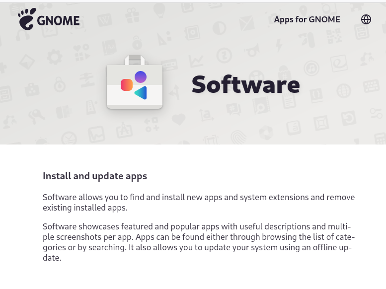
Instala el programa Notes para GNOME.
- Abre el programa Software.
- Busca la aplicación Notes a instalar
- Introduce tu constraseña de administrador y procede con la instalación.
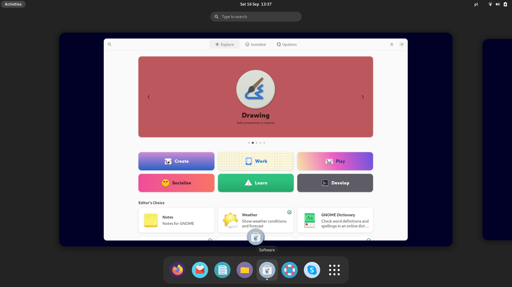
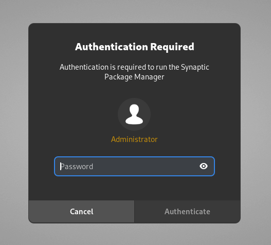
Mi primer editor de texto para programar
Le herramienta principal para un programador es sin lugar a dudas un editor de texto plano y sencillo. Recuerda que nuesto objetivo será escribir programas y no obras literarias, por lo que nuestro editor de texto no debe enfocarse en cambiar la fuente y estilo de un párrafo.
Al contrario, necesitamos de una herramienta que nos permita escribir instrucciones de manera clara y sencilla. Para este fin hay una infinidad de opciones, hay muchos editores de texto para propósitos específicos y existen otros editores de texto que se pueden usar para escribir todo tipo de programas en diferentes lenguajes.
- gedit es el editor de texto mas sencillo de usar dentro del entorno GNOME. (Fácil)
- eclipse es un editor popular dentro de la categoria de IDEs (integrated development environment) y está disponible para usar en Linux. (Medio)
- vim es un editor gratis y de libre uso, altamente configurable y disponible en casi cualquier sistema tipo UNIX. (Difícil)
- emacs es un editor altamente configurable, free/libre y junto con vim, usada y preferida por varias generaciones de programadores. (Difícil)
En esta práctica usaremos gedit, pero te invitamos a que no te pierdas la oportunidad de aprender al menos uno de los editores entre emacs y vim.
Crear un archivo de texto
- Abre el editor gedit.
- Introduce el texto: "Este es mi primer archivo de texto en Linux/Debian".
- Guarda el archivo dentro de la carpeta Practicas con el nombre mi_texto.txt.
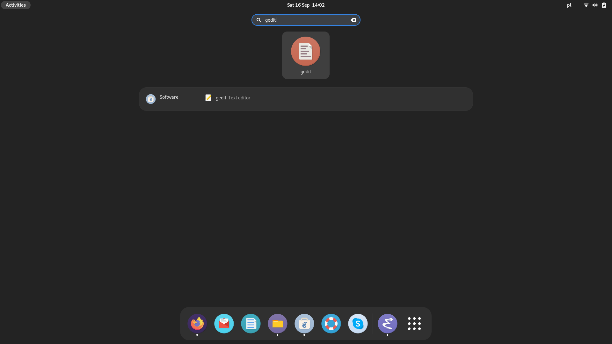
Conlusiones
Este ha sido solo una primera vista a tu nuevo sistema operativo Linux/Debian. En adelante estaremos escribiendo programas dentro de Linux/Debian y es importante llevar un orden y ciertas reglas para escribir los archivos. Las siguientes son recomendaciones que a lo largo de la experiencia hemos encontrado útiles y no son para nada reglas establecidas, pero han evitado muchos dolores de cabeza
- El nombre de un archivo o carpeta nunca inicia con un número.
- El nombre de un archivo o carpeta nunca lleva caracteres especiales ni acentos.
- El nombre de un archivo o carpeta no lleva espacios en blanco, es mejor usar el guión bajo: _.
Es importante tomar en cuenta que el sistema Linux/Debian es sensible a mayúsculas (case sensitive) es decir, el nombre del archivo File es distinto del archivo file.
Programas compatibles y alternativos
Objetivo
Conocer los programas disponibles para Linux/Debian que permitirán realizar diversas actividades llamadas de oficina.
Antecedentes
Después de instalar un sistema operativo como Linux/Debian podemos inmediatamente comenzar a
- Navegar por el internet.
- Escribir reportes con texto en distintos formatos.
- Realizar operaciones en una hoja de cálculo.
- Ver imágenes y posiblemente editar imágenes.
- Abrir archivos tipo pdf.
Es posible que podamos realizar estas tareas con programas que ya conocemos, por ejemplo, para Linux se ecuentran disponibles navegadores como Firefox. Por otro lado, no todos los programas son compatibles para Linux. Ésto a propiciado que la comunidad de programadores de software libre desarrolle programas alternativos a los programas propietarios estándar.
En esta sección haremos una descripción de los siguetes programas dispoinible para Linux/Debian usando el entorno GNOME.
- Firefox
- Libreoffice
- Gimp
- Document viewer
Práctica
Asegurate de poder localizar y en su caso, instalar los siguentes programas.
Firefox - Un nevagador de internet
Firefox es un navegador my popular de internet y su uso es muy intuitivo.
Libreoffice - La version libre de programas de oficina
No es lo mismo que Office, pero es una excelente alternativa de licencia libre y te permitirá realizar las tareas de oficina más comunes.
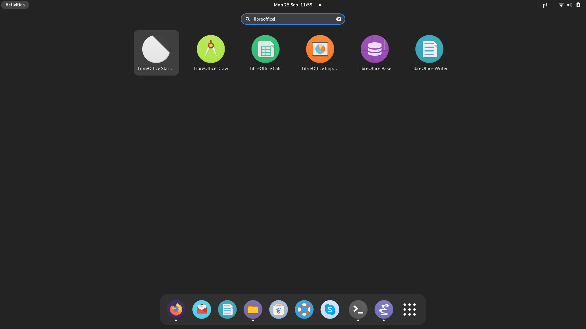
- Wirter - Crear documentos de texto (.odt)
Así luce
Write, en donde puedes crear documentos para oficina de la manera usual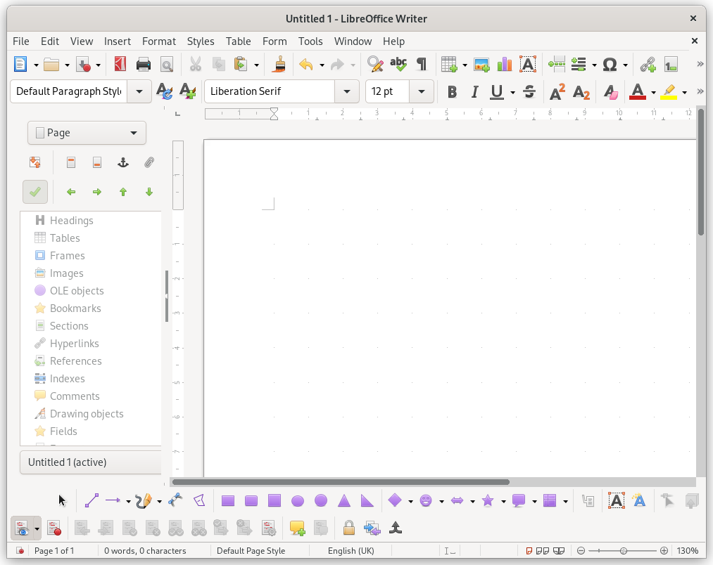
- Calc - Crear hojas de cálculo (.ods)
Para acer tablas y hojas de cálculo, libre office ha desarrollado esta gran alternativa
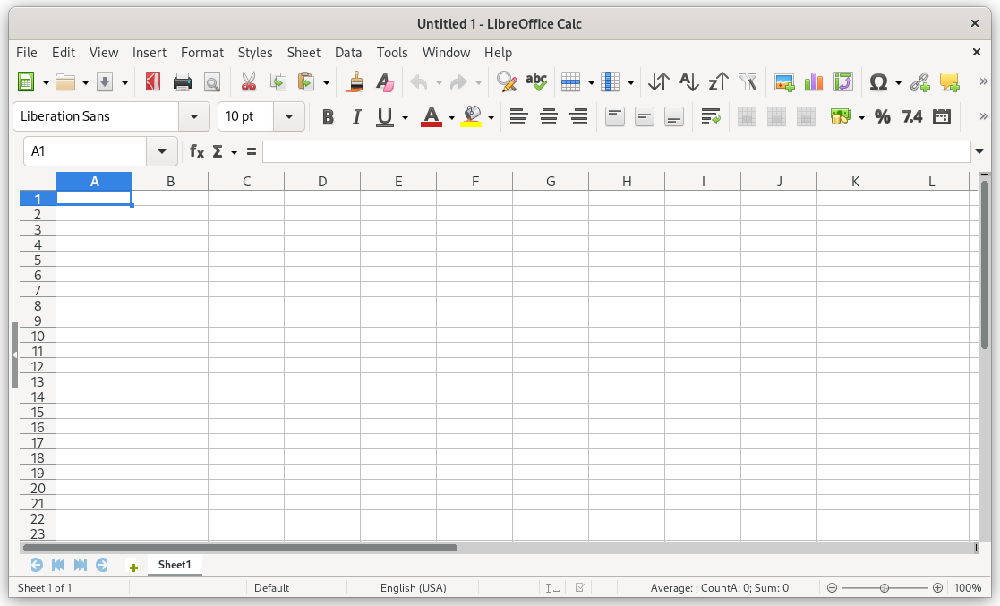
- Impress - Crear presentaciones (.odp)
Impresses una gran herramienta libre para crear presentaciones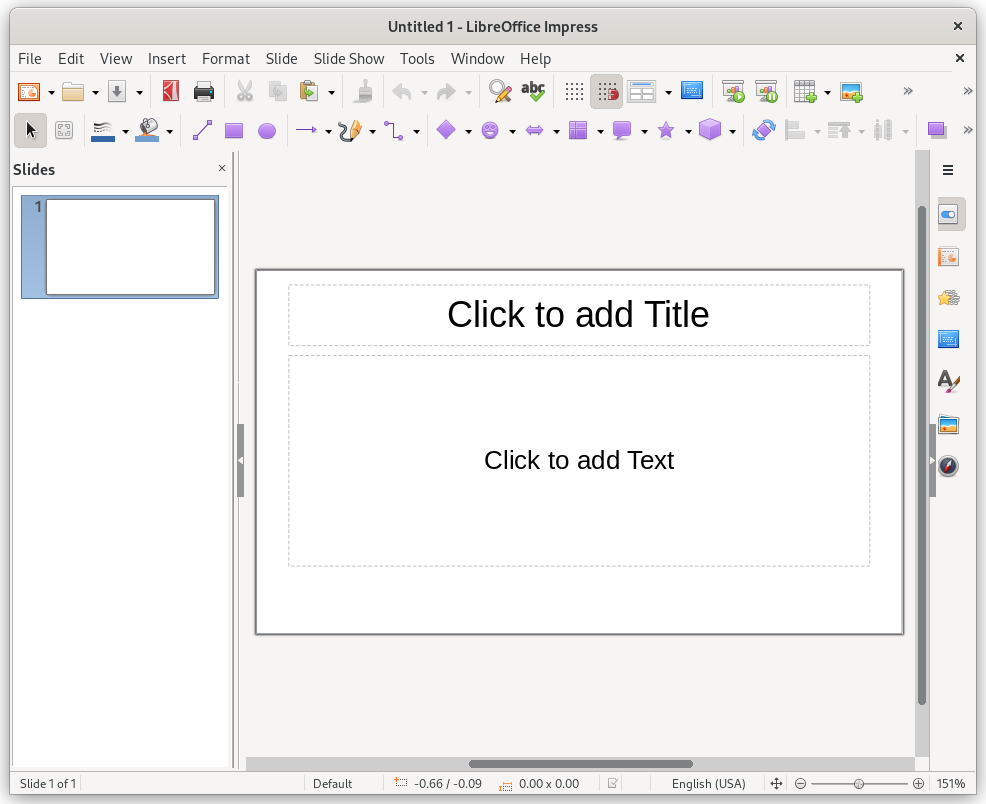
- Draw - Una alternativa para Corel (.odg)
Drawes un editor de gráficos vectoriales desarrollado por LibreOffice y es ampliamente utilizado en la creación de diagramas eléctricos, diseño de logotipos y más.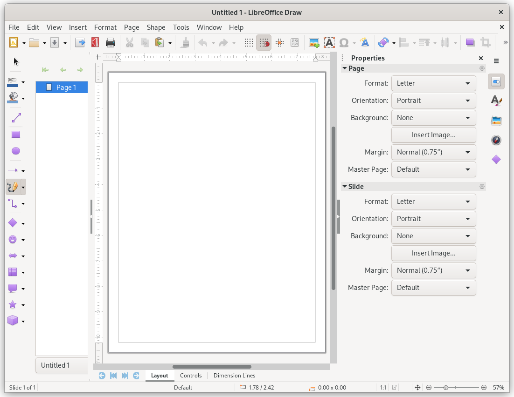
- Base - Un manejador de Base de datos con interfaz gráfica
Para gestionar y administrar bases de datos relacionales, LibreOffice pone a nuestro alcance
Base, reconocido por su capacidad multiplataforma y su amigable interfaz gráfica.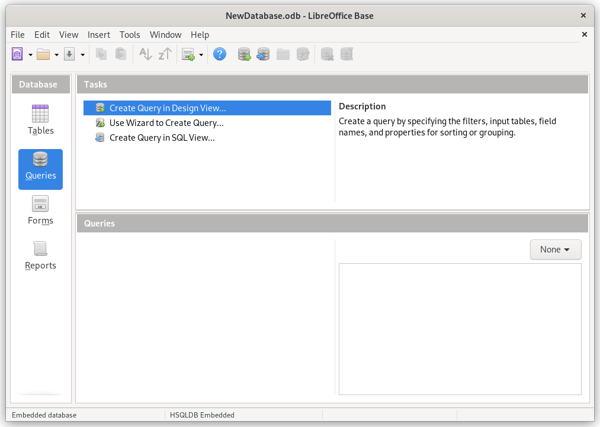
Gimp
Gimp es un Programa de Manipulación de Imágenes de GNU (Gimp por sus siglas en ingés). Puede usarse para retocar fotos o para creación de imágenes en general.
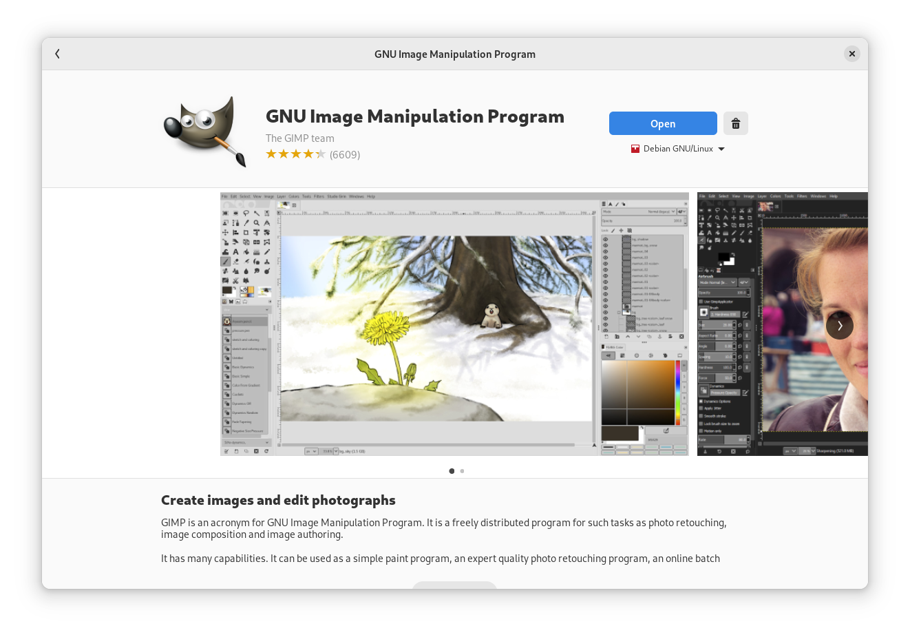
Evince
Evince ( también conocido como DocumentViewer) es un programa muy útil que te permitirá leer, agregar comentarios y anotaciones a tus archivos de tipo pdf y similares
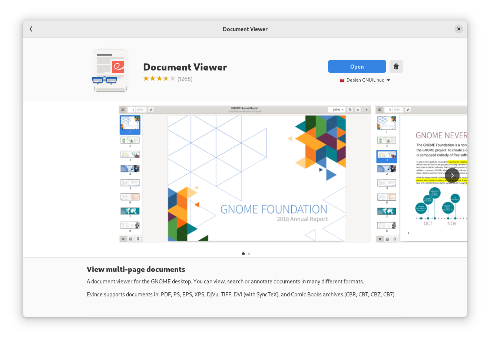
Conclusiones
Es verdad, pasar de un sistema operativo a otro no es cambio tan sencillo, especialmente si estás acostumbrado a ciertos programas que no se encuentran disponibles en Linux por ejemplo.
Sin embargo la noticia no es tan mala. Linux se ha desarrollado muchísimo todo este tiempo, y los programas de oficina compatibles con Linux son verdaderamente competitivos. Es importante también aclarar que, el verdadero poder de un sistema operativo Linux tiene que ver mucho más con la programación, administración de servidores y mantenimiento de bases de datos.
Programas como grep, awk, vim, emacs, crontab, entre muchos otros dentro de la familia de los
llamados tipo UNIX, son muy poderosos para la automatización de procesos, inclusive para
muchas tareas de oficina.
Te invitamos a seguir conociendo estas y más herramientas.
Conociendo la Terminal
Objetivo
Conocer y usar algunos comandos básicos de la terminal de linux.
Antecedentes
La terminal es la herramienta que caracteriza a todos los sistemas operativos de tipo UNIX, entre los que se cuentan los sistemas Linux. Tiene múltiples nombres: Terminal/Shell/Consola/Línea de comandos. Para hacerlo aún más confuso, existen varios tipos de Terminales: Bash/Z shell/Korn shell/C shell/Zsh. Cada una de estas terminales tienen características específicas y no son totalmente compatible una con otra. En Linux/Debian, la terminal predeterminada es GNU Bash (the Bourne Again SHell). En el entorno GNOME el programa Terminal es un emulador que da accesso al entorno Bash que se usa para usar y correr programas disponibles en tu sistema.
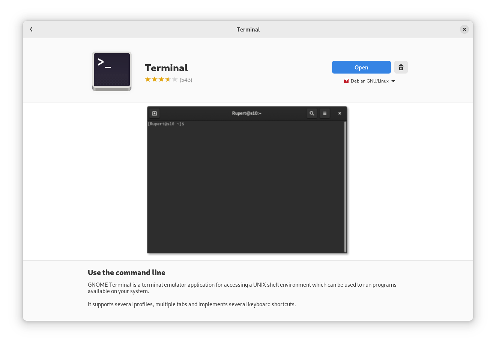
Práctica
A continuación daremos nuestros primeros pasos usando la terminal. Cabe resaltar que la terminal es una herramienta de una inmensa utilidad y tomará mucho tiempo para poder usarla efectiva y eficientemente. Sin embargo, un comienzo es todo lo que necesitamos para poco a poco ir dominando esta poderosa herramienta que tenemos frente a nosotros. Con ella, tenemos acceso a los programas de nuesta computadora, y podemos dar instrucciones directas a nuestro sistema para realizar ciertas acciones. En esta práctica nos concentraremos en comandos para movernos dentro del sistema de archivos de nuestro ordenador.
¡Abre tu terminal y pongamos en acción los siguentes comandos!
Movimiento entre directorios
La primera pregunta que haremos en la terminal es ¿En dónde estamos?
pwd: Print working directory - muestra el directorio de trabajo actual
pwd
/home/username
ls: List information - Enlista el contenido del directorio de trabajo
ls -l
| total | 4424 | | | | | | | | | drwxr-xr-x | 2 | username | username | 4096 | Sep | 26 | 2022 | bin | | drwxr-xr-x | 2 | username | username | 4096 | Sep | 22 | 2018 | Desktop | | drwxr-xr-x | 33 | username | username | 4096 | Sep | 9 | 11:15 | Documents | | drwxr-xr-x | 63 | username | username | 86016 | Sep | 14 | 20:28 | Downloads | | -rw-r--r-- | 1 | username | username | 4325012 | Nov | 7 | 2022 | Firefox_wallpaper.png | | drwxr-xr-x | 5 | username | username | 4096 | Jan | 4 | 2023 | Mail | | -rw------- | 1 | username | username | 9017 | Jun | 14 | 2021 | mbox | | drwxr-xr-x | 13 | username | username | 4096 | Feb | 19 | 2023 | Music | | drwxr-xr-x | 27 | username | username | 36864 | Aug | 7 | 18:17 | Pictures | | drwxr-xr-x | 2 | username | username | 4096 | Sep | 22 | 2018 | Public | | drwxr-xr-x | 2 | username | username | 4096 | Sep | 22 | 2018 | Templates | | drwxr-xr-x | 3 | username | username | 4096 | Sep | 13 | 2022 | Videos |
cd: Change Directory - Cambia de directorio de trabajo
cd Documents/Practicas/
Si quieres moverte al directorio inmediato superior, que en este caso es Documents, entonces el comando
cd ..
y puedes comprobar que estás en el directorio deseado:
pwd
/home/username/Documents/
También puedes especificar el directorio dando toda la ruta, por ejemplo, para acceder nuevamente al directorio Practicas puedes escribir
cd /home/username/Documents/Practicas/
¿Recuerda que en la práctica anterior, creamos el archivo mi_texto.txt?
ls -l /home/username/Documents/Practicas/
| -rw-r--r-- | 1 | username | username | 51 | Sep | 17 | 19:18 | mi_texto.txt |
cat: Concatenate files - Muestra el contenido de un archivo de texto en la salida standard (es decir, en la terminal)
cat mi_texto.txt
: Este es mi primer archivo de texto en Linux/Debian
Una vez que te sientas cómodo navgando dentro de tus directorios y archivos dentro de la terminal puedes experimentar con los siguientes comandos
pwd: Print working directory - muestra el directorio de trabajo actualls: List information - Enlista el contenido del directorio de trabajocd: Change Directory - Cambia el directorio de trabajocat: Concatenate files - Muestra el contenido de un archivo de texto en la salida standard (es decir, en la terminal)mkdir: Make a directory - Crear un nuevo directoriorm: Remove a file - Borrar un archivo dentro del directorio de trabajorm -r: Remove a directory - Borrar un directorio/folder y su contenido dentro del directorio de trabajo
Cuidado al borrar archivos y directorios usando la terminal. ¡No hay manera de recuperarlos!
Obteniendo información
Con estos comandos pdorás conocer mejor tanto el hardware como el software de tu computadora. Ingresa cada uno de los comandos y observa las salidas en la misma terminal.
lsb_release: Obtener la version del sistema operativo
lsb_release -a
lsusb: Enlista los dispositivos USB disponibles
lsusb
lspci: Muestra una lista de dispositivos conectados al sistema.
lspci
cat /proc/cpuinfo: El contenido del archivo cpuinfo muestra el tipo de procesador corriendo en el sistema así como el número de CPUs presentes.
cat /proc/cpuinfo
cat /proc/meminfo: El contenido del archivo meminfo reporta la cantidad de memoria disponible y la cantidad dememoria utilizada en el sistema en tiempo real.
cat /proc/meminfo
Conclusiones
Al término de ésta práctica, habrás tenido tus primeras experiencias usando la Terminal de Linux. Considera esto como sólo el inicio, una pequeña probada de esta herramienta, ya que pronto usarás esta herramienta con mayor eficiencia. Las posibilidades de dar instrucciones específicas a tu computadora son enormes, ahora que conoces una herramienta que te permite una interacción mucho más directa con el contenido de tu computadora y de sus programas.
Archivos, ejecutables y permisos
Objetivo
Conocer la differencia entre un archivo de texto, un programa y un ejecutable. Leer de manera detallada la salida de el comando ls -l Conocer los tipos de permisos en Linux.
Antecedentes
De los tipos de archivos más básicos se encuentran los archivos de texto. En ellos podemos ingresar información para que otro ser humano pueda leer su contenido. Pero también es posible ingresar texto con instrucciones para nuestra computadora, generalmetne en un lenguaje en específico, para lo cual necesitaremos o de un intérprete, es decir, un programa que ejecute de manera secuencial las instrucciones escritas en el archivo, o es posible que necesitemos de un compilador, el cual se encargará de crear un archivo el cual ejecuta todas las instrucciones que se especificaron. Un folder es también un archivo de texto el cual está apuntando a cierta parte reservada de la memoria.
Es decir, debemos saber distinguir entre folders, archivos de texto y archivos ejecutables. Cada uno de estos tipos de archivos y directorios tienes asignado derechos de acceso para tres conjuntos de usuarios:
- Propiatario (owner)
- Miembros del grupo propietario del archivo
- Para cualquier usuario
En esta práctica explicaremos con mayor detalle el uso de los comandos ls y chmod.
Práctica
Chmod para archivos
Para esta práctica nos ubicaremos en la carpeta Practicas en donde hemos creado el archivo de texto mi_texto.txt
cd /home/username/Documents/Practicas/ ls -l
-rw-r--r-- 1 username username 51 Sep 17 19:18 mi_texto.txt
A continuación explicamos ¿Cómo leer "-rw-r--r--" ?
De izquierda a derecha tenemos que:
- El primer caracter "-" indica el tipo de archivo, en este caso indica que se trata de un arvhivo regular. Cuando se trata de un directorio, el primer caracter que aparece es la letra "d".
- Los siguientes tres caracteres: "rw-" nos indica los permisos para el propietario del archivo, la letra "r" indica permiso de lectura (read), la letra "w" indica el permiso de escritura (write), y la última letra "x" indica el permiso de ejecución y que en este caso no está autorizado "-".
- Los siguientes tres caracteres: "rw-" nos indica los permisos para el grupo de usuarios propietarios del archivo, entonces la terna "r–" debe leerse como que el grupo de usuarios si tiene permisos de lectura pero no tiene permiso ni de escritura ni de ejecución.
- Los últimos tres caracteres nos indica los permisos para todos los usuarios, en este caso la terna "r–" indica que sólo se tienen permisos de lectura y/o ejecución.
Conversión a binario
Puedes completar la siguente lista para cubir con todas las opciones
| Literal | Binario | Decimal | Descripción |
|---|---|---|---|
| rwx | 111 | 7 | Sin restricciones |
| rw- | 110 | 6 | Permiso para leer y escribir, pero no ejecutar |
| r-x | 101 | 5 | Permiso para leer y ejecutar pero no para escribir |
| r-- | 100 | 4 | Sólo con permiso para leer |
Por ejemplo si escribimos en la terminal
cd /home/username/Documents/Practicas/ chmod 642 mi_texto.txt ls -l
: total 4 : -rw-r---w- 1 username username 51 Sep 17 19:18 mi_texto.txt
En este caso debemos leer el permiso 642 de la siguente manera:
- 6 indica los permisos
rw-para el propietario del archivo. - 4 indica los permisos
r--para miembros del grupo propietario del archivo. - 2 indical los permisos
-w-para todos los demás usuarios.
Describe la siguiente salida
chmod 644 mi_texto.txt ls -l
: total 4 : -rw-r--r-- 1 username username 51 Sep 17 19:18 mi_texto.txt
Chmod para carpetas
El comando chmod puede usarse en carpetas y tenemos los siguientes atributos
- r - permite que el contenido de la carpeta puesa ser enlistado (si el permiso x está activado).
- w - permite que el dentro de la carpeta se puedan crear, eliminar o renombrar archivos (si el permiso x está activado).
- x - Permite el acceso a la carpeta, por ejemplo al ejecutar
cd dir.
Con esta información, realiza las siguentes intrcucciones dentro de la carpeta Practicas.
- Crea un nevo directiorio en la carpeta temp_dir
- Cambia los permisos con
chmoda 666 - Intenta ingresar a la carpeta
cd temp_dir - Usa
ls -lpara entender el mensaje de error - Cambia los permisos con
chmoda 755
mkdir temp_dir
ls -l /home/username/Documents/Practicas/
total 8 -rw-r--r-- 1 username username 51 Sep 17 19:18 mi_texto.txt drwxr-xr-x 2 username username 4096 Sep 24 19:17 temp_dir
chmod 666 temp_dir cd temp_dir
bash: cd: temp_dir/: Permission denied
ls -l /home/username/Documents/Practicas/
total 8 -rw-r--r-- 1 username username 51 Sep 17 19:18 mi_texto.txt drw-rw-rw- 2 username username 4096 Sep 24 19:17 temp_dir
chmod 755 temp_dir
total 8 -rw-r--r-- 1 username username 51 Sep 17 19:18 mi_texto.txt drwxr-xr-x 2 username username 4096 Sep 24 19:17 temp_dir
Crear un archivo ejecutable
Hemos hablado de archivos con permiso de ejecución, éstos no son otra cosa mas que programas con
instrucciones para bash. Por ejemplo vamos a crear el archivo mi_prgrama.prog
y lo haremos desde la terminal.
- Primero aprenderemos un poco del programa
echo
echo "este es un texto"
- Ahora usaremos el símbolo
>para re-direccionar la salida hacia un archivo de texto
echo "ls -l" > mi_programa.prog
- Cambia los permisos del archivo para que todos los usuarios puedan ejecutarlo como un programa
chmod 777 mi_programa.prog
- Para ejecutar el programa simplemente escribe
./mi_programa.prog
./mi_programa.prog
Observa que el resultado será el mismo que si usas el comando ls -l, pues esa es la instrucción dentro del archivo.
- Borra el archivo
rm mi_programa.prog
Más adelante haremos muchos más programas tanto para la terminal como en otro tipo de lenguajes.
Conclusiones
Terminaremos esta sección con las siguentes sugerencias.
Usualmente los Folders de archivos llevan los permisos 755.
Por lo tanto, para establecer el permiso 755 a todos los folders dentro de la carpeta Practicas
hacemos
find /home/username/Practicas -type d -exec chmod 755 {} \;
Por otro lado, para cambiar el permiso de todos los archivos dentro de una carpeta, escribimos
find /opt/lampp/htdocs -type f -exec chmod 644 {} \;
Y nunca está de mas echarle un vistazo al manual
man chmod
Recuerda siempre tener cuidado con el comando rm -r, para remover/eliminar archivos y folders.
Configurarndo APT
Objetivo
Configurar y utilizar apt para hacer actualizaciones de paquetes.
Antecedentes
Como ya lo deberías ir sospechando, no todos los programas para Windows corren en Linux/Debian. Sin embargo hay programas como el navegafor firefox que se encuentra disponible en la mayoria de los sistemas operativos.
La filosifía es la siguente: la colección de programas que puedes instalar en Linux/Debian, se encuentran en los llamados repositorios oficiales de Debian. Esto tiene muchas ventajas pues el software disponible es seguro. La desventaja es que debes mantener actualizada tu configuración a los repositorios.
La configuración se encuentra en un archivo llamado souces.list, que sólo puede ser modificado por el administrador del sistema (es decir el super user que configuraste durante la instalación).
Práctica
Para ésta práctica, ingresaremos como super usuario:
su Password:
Si ha sido exitosa la operación, el símbolo $ cambiará por #.
Localizar el archivo sources.list
(Como administrador) Ingresar al directorio /etc/apt/:
cd /etc/apt/
ls -l
Si el archivo no existe, no te preocupes. Puedes crearlo siguiendo los mismos pasos.
Abre el archivo sources.list
Para abrir el archivo (o crearlo en caso de que no exista) usando gedit como super usuario (administrador), simplemente escribimos
gedit sources.list
Esto abrirá un archivo de texto.
Edita el archivo
¿Qué debe decir el archivo?
El siguente es un ejemplo del contenido del archivo sources.list para Linux/Debian 12/Bookworm (stable).
deb http://deb.debian.org/debian bookworm main deb-src http://deb.debian.org/debian bookworm main deb http://deb.debian.org/debian-security/ bookworm-security main deb-src http://deb.debian.org/debian-security/ bookworm-security main deb http://deb.debian.org/debian bookworm-updates main deb-src http://deb.debian.org/debian bookworm-updates main
Si te preguntas, ¿cómo saber qué version de Linux/Debian tengo instalado? Puedes ingresar el siguente comando
lsb_release -a
Distributor ID: Debian Description: Debian GNU/Linux 12 (bookworm) Release: 12 Codename: bookworm
Actualizar
Ahora estas listo para correr dos de las instrucciones más comunes para mantener tus paquetes actualizados con las nuevas mejoras:
Simplemente corre los siguientes comandos como super usuario (administrador)
apt update apt upgrade
Una vez que hayas editado correctamente el archivo, guarda los cambios desde gedit. Para salir del modo super user (o administrador) simplemente escribe en la terminal
exit
Notarás que el prompt regresa al símbolo $.
Más información
En el siguente enlace podemos encontrár más información sobre la
configuración del arhivo sources.list.
https://wiki.debian.org/SourcesList
Entre la información relevante encontramos
| main | cosiste de paquetes del tipo DFSG-compliant. Estos son paquetes considerados paquetes Debian propiamente. |
|---|---|
| contrib | contiene paqueted del tipoi DFSG-compliant, pero con dependencias posiblemente fuera de main. |
| non-free | contiene software que no satisface las condiciones para ser de tipo DFSG. |
Conclusiones
Este fue solo una probadita de apt. Sin lugar a duda usarás este comando muy a menudo.
La documentación es muy completa y ahroa puedes darte un paseo por las opciones
más comunos de apt:
apt -listlist packages based on package names/enlista los paquetes en base a su nombreapt -searchsearch in package descriptions/busca las descripciones de un paqueteapt -showshow package details/muestra los detalles de un paqueteapt -installinstall packages/instala paquetesapt -reinstallreinstall packages/reinstala paquetesapt -removeremove packages/elimina paquetesapt -autoremoveautomatically remove all unused packages/automaticamente elimina todos los paquetes que no se usanapt -updateupdate list of available packages/actualiza la lista de paquetes disponiblesapt -upgradeupgrade the system by installing/upgrading packages/actualiza el sistema instalando nuevas versionesapt -full-upgradeupgrade the system by removing/installing/upgrading packages / actualiza el sistema operativoapt -edit-sourcesedit the source information file / edita el archivo de información de fuentesapt -satisfysatisfy dependency strings / satisfacer dependencias de un paquete
Una introducción a grep
Objetivo
Conocer una de las aplicaciones más utilizadas por programadores en sistemas de tipo Unix.
Antecedentes
grep es un programa que puede utilizarse en la terminal y que se especializa en encontrar patrones de texto. En programación, los patrones de texto o cadenas alfa-numéricas son llamads expresiones regulares ( o regular expressions )
Este programa es uno de los más antiguos en el mundo de la programación y
tiene muchísimas aplicaciones en la acutalidad. El programa grep consta de reglas de busqueda de texto sencillas,
con las cuales pueden construirse nuevas reglas de búsqueda increíblemente complejas. En la llamada
mineria de textos, grep es insuperable.
Práctica
Los siguentes comandos los aplicaremos en nuestra carpeta destinada a las prácticas /Documents/Practicas.
Primero crearemos un archivo de texto (desde la terminal o desde un editor de texto) y posteriormente usaremos este archivo para ilustrar con ejemplos algunos de los comandos básicos de grep.
- Creamos el archivo de texto
grep_archivo.txt, en esta ocación desde la termina. Al final de la entrada presionamosCtrl+dindicando el final del archivo (EOF).
cat > grep_archivo.txt Este es nuestra primer línea de texto Aqui escribo nuestra segunda para la prueba de grep A continuacion encontrarás la tercer línea de texto. Este es el inicio de un nuevo párrafo. ¿Será la fila 4 o la fila 5? Al final de esta linea presionaré ctrl + d
Si todo a salido bien, puedes ver el contenido del archivo con el comando
cat grep_archivo.txt
- Usar
greppara localizar un patrón en nuestro archivo
grep texto grep_archivo.txt
Este es nuestra primer línea de texto A continuacion encontrarás la tercer línea de texto.
Como podrás observar, grep arroja como resultado las lineas dentro de grep_texto.txt en donde ha localizado la ocurrencia de la palabra texto.
- Usar
grep -npara localizar un patrón en nuestro archivo y mostrar el número de fila del achivo en la cual ocurre.
grep -n texto grep_archivo.txt
1:Este es nuestra primer línea de texto 3:A continuacion encontrarás la tercer línea de texto.
- usar
grep -cPara contar el número de lineas en donde aparece un patrón
grep -c texto grep_archivo.txt
2
- usar
grep -vPara mostrar las líneas del archivo en donde NO aparece el patrón
grep -v texto grep_archivo.txt
Aqui escribo nuestra segunda para la prueba de grep Este es el inicio de un nuevo párrafo. ¿Será la fila 4 o la fila 5? Al final de esta linea presionaré ctrl + d
Debes notar que puedes combinar las distintas opciones que descrito, por ejemplo
grep -vn texto grep_archivo.txt
- usar
grep -ipara que se ignore la diferencia entre mayúsculas y minúsculas
Compara las salidas de
grep Es grep_archivo.txt
grep -i Es grep_archivo.txt
- Usar
grep -xpara buscar por un patron de manera exacta
grep -x "A continuacion encontrarás la tercer línea de texto." grep_archivo.txt
A continuacion encontrarás la tercer línea de texto.
Wildcards
Una de las características que hacen a grep una aplicación muy útil, es el uso de comodines o wildcards
- Reemplazemos el archivo grep_archivo.txt con el siguiente texto
cat > grep_archivo.txt user_1rjdeb0,rmp_dd2023,uss1901 user_2fedpj0,rmp_aa2023,uss1901 user_3rjdeb0,rmp_ff2023,uss1901 user_1ubrjs0,rmp_hh2023,uss1901 user_5rjdeb0,rmp_ll2023,uss1901
recuerda que al final presionamos CTRL+ d para indicar el fin del archivo
- usa el comodín ".*" para econtrar todo lo que contiene un patron
En este ejemplo queremos usar grep para encontrar "user1rjdeb0" y "user1ubrjs0". Pare esto usamos el siguiente comando
grep -no "user.*1.*0," grep_archivo.txt
1:user_1rjdeb0, 4:user_1ubrjs0,
¿Cómo leer esta expresión?
Buca cualquier cadena de texto que comience con user seguido de cualesquiera caracteres .* hasta encontrar un 1, seguido de cualesquiera caracteres .* hasta encontrar un 0 y una coma ",".
Desde luego hay muchas otras maneras más eficientes de realizar esta búsqueda y lo cual requere un conocimiento más amplo de grep.
- Buscar achivos que contengan:
Para buscar dentro de la carpeta de trabajo, todos los archivos de texto que contengan algún patrón, simplemente podemos usar
grep -ln user_ *
grep_archivo.txt
Conclusiones
Esta fue solo una breve introducción a grep. Puedes encontrar más información
sobre esta importante herramienta
- Usando el comando
man grepdentro de la línea de comandos. - Documentación GNU: https://www.gnu.org/software/grep/manual/grep.html
Primer programa en C
Objetivo
Tener los primeros ejemplos funcionales de un código escrito en el lenguaje C.
Escribir las instrucciones de compilación en un Makefile y
correr el programa compilado desde la Terminal
Antecedentes
Este es uno de los lenguajes de programación más populares desde su aparición en 1972. Muchas de las aplicaciones en sistemas UNIX han sido desarrollados en C. Entre sus puntos fuertes se encuentra la eficiencia del código.
La referencia clásica para aprender a programar en este lenguale es el libro llamado The C programming Language en su segunda edición y escrito por Brian W. Kernighan y Dennis M. Ritchie (usualmente aberviado como K&R)
C es un lenguaje de programación que ayuda a entender varios conceptos fundamentales de programación y al mismo tiempo es uno de los lenguajes más difíciles de aprender.
En este tutorial usaremos los siguientes elementos:
- Librería
#include <sdio.h>. En C existen varias librerías las cuales conforman la llamada librería estándard de C. Entre estas se encuentra la libreríastdio.h. Cada librería contiene a su vez una colección de funciones pre-determinadas. Al nombre de las librerías (en este casostdio.h) también se le conocen como header, En particular, las funciones de input and output se incluyen en<stio.h>. - La función
printfes una de varias funcoines dentro de<stdio.h>. - Tipos de variables
int,float, char. En C es necesario especificar el típo de variable que se va a utilizar, y dependiendo de ello, se asigna una porción de la memoria para su uso.intcorresponde a variables de tipo entero.floatcorresponde a variables reales (con su respectiva limitante de memoria).charcorresponde a variables de tipo caracter, con las cuales es posible definir cadenas (strings). - El programa principal
int main(). Esto define a la función principal del programa. Dentro de esta función se describen las variables que se van a utilizar, las condicionales lógicas que se deben seguir, y los loops básicos for, while, if, … , etc.
Para crear un programa en C debemos seguir los siguientes pasos
- Escribir las instrucciones en un archivo de texto
programa.c. Para esto necesitaos un editor de texto. - Compilar el archivo
programa.c. En Linux el compilador por defecto es GCC. El compilador puede contener muchas instrucciones, es por eso recomendable usar el compilador junto con un archivoMakefile. Este archivo Makefile es un archivo de texto con las opciones que quieren proporcionarse al compilador. - Ejecutar el archivo complilado
./programa.
En los siguientes ejemplos ilustramos precisamente estos pasos. Los programas que describiremos son muy sencillos y el objetivo principal es que tengas un punto de partida para que puedas comenzar a programar en C usando Debian/Linux.
Para conocer más sobre la programación en C te recomendamos ampliamente leer el K&R. En línea es también una gran cantidad de recursos que te van a ayudar a programar en este maravilloso lenguaje.
Práctica
Hola Mundo
- Desde tu editor de texto favorito crea un archivo de texto que llevará el nombre de hola.c
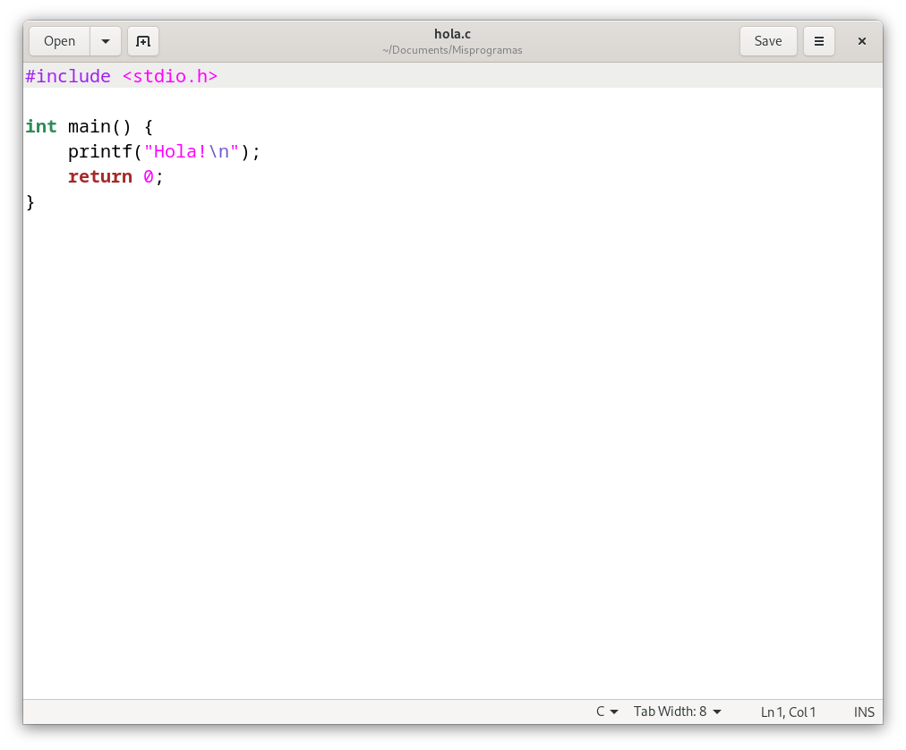
- Antes de compilar el archivo, vamos a crear un
Makefilecon las instrucciones de compilación. Esto te ayudaráen el futuro, cuando trabajes con proyectos más complejos.
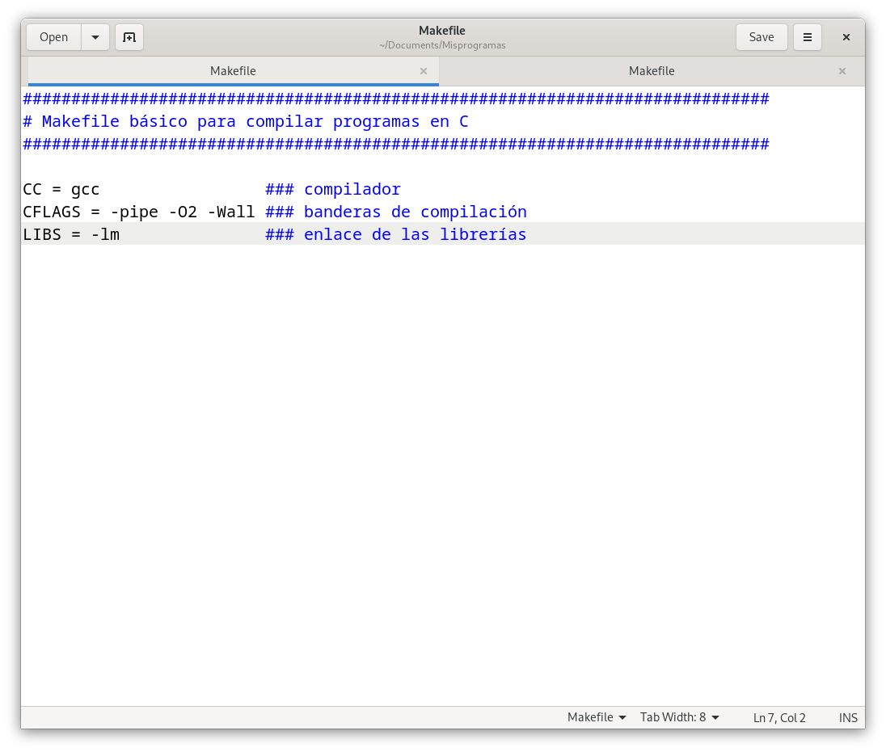
- Compila tu programa (usando Makefile)
make hola
Nota que basta con escribir hola y no es necesario escribir hola.c.
- Opcional: Compila tu programa (sin usar el Makefile)
Es posible compilar el programa en C sin pasar por el Makefile, para esto es necesario escribir todas las
opciones en el proceso
gcc -pipe -O2 -Wall hola.c -o hola -lm
- Correr tu programa
Para correr el programa compilado, escribimos desde la terminal lo siguiente:
./hola
: Hola!
Convertir escalas de temperatura
A continuación haremos un programa clásico en C, que consiste en hacer una tabla de equivalencia de valores de temperatura en grados Fahrenheit (F) y grados Celsius (C).
Para esto es necesario saber que si se conoce la temperatura en grados \(F\) entonces la regla de conversión es
\begin{equation} C = \frac{5}{9}(F - 32). \end{equation}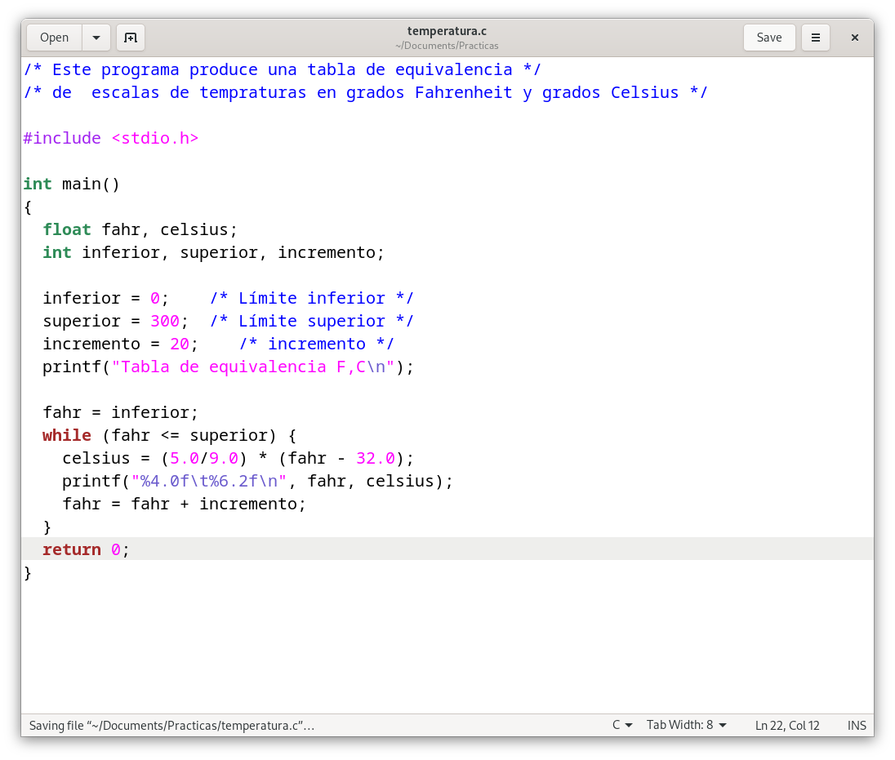
- Dentro de la misma carpeta del
Makefile, guarda el programatemperatura.c. - Compila el programa usando make.
- Ejecuta el programa dentro de la terminal usando el comando
./temperatura.
Si todo ha salido bien, dentro de la terminal debes obtener algo similar a
cd /home/username/Documents/Practicas ./temperatura
Tabla de equivalencia F,C 0 -17.78 20 -6.67 40 4.44 60 15.56 80 26.67 100 37.78 120 48.89 140 60.00 160 71.11 180 82.22 200 93.33 220 104.44 240 115.56 260 126.67 280 137.78 300 148.89
Descripción linea a línea del código:
int main(){}
Ésta es una función especial dentro de C. Es dentro de ésta función que tu programa será ejecutado llamando otras funciones para llevar a cabo las instrucciones deseadas.
float, int
En C es necesario declarar el tipo de variables que el programa utilizará, con tal de reservar la porción de memoria correcta. En nuestro caso,
intindica variables de tipo entero yfloatindica variables de tipo flotante (valores con punto decimal).Después de declarar el tipo de variable el nombre de la variable puede darse enseguida, en nuestro caso, hemos definido las variables
fharycelsiuscomo variables de tipo flotante, y las variablesinferior,superioreincrementocomo variables de tipo entero.Desde luego hay otros tipos de variables que pueden declararse dependiendo de las necesidades. El tamaño y rango en la siguente tabla varía dependiendo del tipo del hardware y el tipo de compilador.
Identificador Tipo Formato Tamaño en bits Intervalo char Carácter %c 8 0 a 255 int Entero con signo %d 16 -32 768 a 32 767 float Flotante simple(aprox. 6 dígitos de precisión) %f 32 3.4E-38 a 3.4E+38 double Flotante doble %lf 64 1.7E-308 a 1.7E+308 void vacío 0 sin valor inferior = 0
Esta parte se conoce como la inicialización de las variables. Aquí hemos asignado un valor inicial a cada una de las variables declaradas.
printf("Tabla de equivalencia F, C\n")
La función
printfestá definida dentro de la libreríastdio.h. En este caso, la instrucción es que dentro de la salida estándard (la terminal) se muestren el mensaje "Tabla de equivalencia F, C". Al final "\n" es una instrucción para indicar a printf que debe continuar en una nueva línea. En la siguente tabla se encuentran algunas instrucciones similaries.Código Significado '\n' nueva línea '\r' retorno de carro '\f' nueva página (form feed) '\t' tabulador horizontal '\b' retroceso (backspace) '\'' comilla simple '\"' comillas '\\ ' barra invertida '\? ' interrogación while(fahr <= superior){}
Este es unejemplo de un bucle en C y tiene la siguente estructura:
while (expression){ sentence }
En nuestro caso, mientras se verifica que el valor de la variable
fahrsea menor o igual al valor de la variablesuperior, entonces el compilaor procede a realizar las instrucciones especificatas dentro de las llaves{}.Existen además otros tipos de bucles en C:
- la sentencia condicional
if. - el bucle
while. - el bucle
do - while - el bucle
for - las sentencias condicionale
break,continue. - la selección de casos
switch.
Algunas senteincias de comparación son
< menor que > mayor que <= menor o igual que >= mayor o igual que == igual que != distinto de También es posible usar los opeardores lógicos OR:
||, AND:&&and NOT:!.- la sentencia condicional
celsius = (5.0/9.0) * (fahr - 32.0);
En esta línea, estamos usando operadores aritméticos para convertir grados F en grados C. A continuación en la tabla se muestran más de estos opeardores:
+ operador de suma - operador de resta '*' multiplicación '/' división entera '%' residuo de la división (operador módulo) printf("%4.0f\t%6.2f\n", fahr, celsius);
Nuevamente nos encontramos con la función
printf, pero en esta ocasión usamos más argumentos.printfacepta un especificador de formato, el cual toma la forma%[flags][width][.prec][h|lL] type.Como la variablefahres de tipo flotante, debemos ingresar enprintfel tipo de variable a imprimir en la forma%type, que en este caso sería%fpara el tipo flotante. Sin embargo, al escrbibir%4.0f, estamos indicando que queremos imprimir el valor de una variable de tipo flotante con longitud de 4 espacios y 0 espacios para decimales. Al escriibir\tindicamos que queremos un espacio de tipo tabular.%6.2findica que queremos imprimer el valor de una variable de tipo flotante con longitud de 6 espacios, y 2 espacios después del punto decimal. Finalmente\nindica una nueva linea. Los valores de%fserán tomados de las variablesfahrycelsius, en ese orden.fahr = fahr + incremento
Aquí lo que hacemos es reemplazar el valor de la variable
fahral sumar el valor deincremento. Antes de continuar, el compilador regresará a la expresión a verificar dentro del buclewhile. Si el valor defhar <= superiores verdadero, se ejecutarán nuevamente las instrucciones, de lo contrario, el compilador saldrá del buclereturn 0;
En C y en muchos otros programas,
return 0;indica que el programa se ha ejecutado de manera correcta.
Conclusiones
C es un gran lenguaje de programación para iniciar, pero paradójicamente, es un lenguaje muy difícil de usar en un nivel intermedio. Sin embargo, C es la introducción a otros lenguajes y paradigmas de programación de más alto nivel.
Primer programa en Python
Objetivo
Tener los primeros ejemplos funcionales de un código escrito en el lenguaje python y poder correr el programa compilado desde la Terminal
Antecedentes
Python es un lenguaje que no necesita compilación, sino un intérprete.
Práctica
- Desde tu editor de texto favorito crea un archivo de texto que llevará el nombre de hola.py
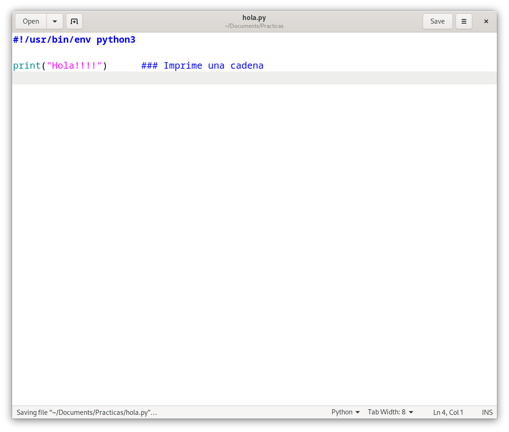
- Guardalo en la carpeta Documents/Practicas.
- Abre tu terminal y usa el comando
cdpara ingresar al folder Documents/Practicas. - Da a tu archivo permisos de ejecución.
chmod 777 hola.py
- Ejecuta tu programa en la línea de comandos usando
python3
python3 hola.py
- Ejecuta tu programa en la línea de comandos como un archivo ejecutable
./hola.py
En ambos casos como resultado de la ejecución debes ver en tu terminal el mensaje
Hola!!!!
Conclusiones
Python es uno de los leguajes de programación más populares en la acutalidad. Tener la posibilidad de escribir y correr programas en python en tu ordenador es sin lugar a dudas una gran ventaja.
Te invitamos a seguir aprendiendo más sobre este lenguaje de programación, cuya comunidad está constantemente desarrollando paqueterías para implementar modelos novedosos de Inteligencia Artificial y Redes Neuronales, entre otros.
¡Visita nuestro curso para principiantes!
Primer programa en Javascript
Objetivo
Instalar node y crear un script en javascript para mandar un mensaje desde un servidor al navegador y viceversa para visualizarlo en el navegador (cliente) y la terminal (servidor).
Antecedentes
JavaScript es un lenguaje de programación interpretado.
Práctica
Instalando Node
sudo apt install nodejs
Verificamos la versión de node y de npm.
node -v npm -v
Creando nuestro proyecto
Creamos una carpeta donde tendremos nuestro proyecto de js.
mkdir proyecto cd proyecto
Creamos nuestro proyecto.
npm init -y
Instalamos la librería express en nuestro proyecto
npm i express
Creamos una carpeta donde se alojará la página del cliente y creamos nuestro archivo proyecto.js
mkdir public
cat > proyecto.js
const express = require('express');
const bodyParser = require('body-parser')
const app = express();
const jsonParser = bodyParser.json();
app.use(express.static('public'));
app.listen(3000, () => console.log('escuchando'));
app.get('/apiGet', (request, response) => {
async function main() {
try {
let mensaje = '¡¡¡Hola mundo!!!';
response.json(mensaje);
} catch (err) {
throw err;
}
}
main();
});
app.post('/apiPost', jsonParser, (request, response) => {
let data = request.body;
console.log(JSON.stringify(data.respuesta));
});
guardamos con Ctrl + D, y ejecutamos nuestro servidor.
node proyecto.js
todavía no podemos ver la interacción con el cliente, damos Ctrl + C, para cerrar el servidor y vamos a crear nuestra página html en la carpeta del cliente.
cd public
Creamos el archivo html (cliente).
cat > index.html
<!DOCTYPE html>
<html>
<head>
<title>Ejemplo</title>
<link rel="stylesheet" type="text/css" href="./index.css">
</head>
<body>
<script type="module" src = "./index.js"></script>
<h1 id="mensaje"></h1>
<div id='contenedor'>
<button id='boton'>Botón</button>
</div>
</body>
</html>
Guardamos con Ctrl + D. Creamos el archivo css (cliente).
cat > index.css #mensaje { font-size: 42px; text-align: center; color: #a2d9ce; } #contenedor { text-align: center; } #boton { margin: auto; }
Guardamos con Ctrl + D. CReamos el archivo js (cliente).
cat > index.js
const holaCliente = async() => {
const api = `/apiGet`;
const response = await fetch(api);
const m = await response.json();
console.log(m);
document.getElementById('mensaje').innerHTML = m;
};
holaCliente();
document.getElementById('boton').onclick = function enviar() {
const main = async() => {
let data = {'respuesta': '¡Hola Servidor!'};
const options = {
method: 'POST',
headers: {
'Content-Type': 'application/json'
},
body: JSON.stringify(data)
};
console.log(data);
const response = await fetch(`/apiPost`, options);
}
main();
};
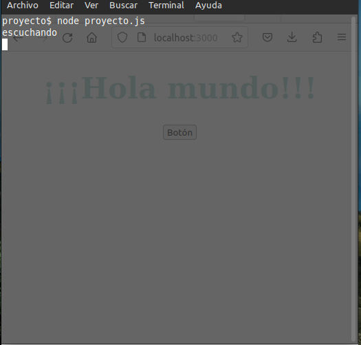
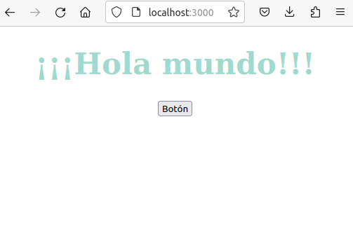
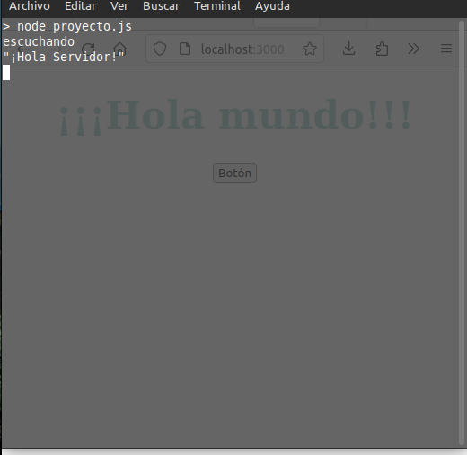
Conclusiones
Hoy en día no hay front end que no requiera de la ayuda de Java-script. Si lo que te gusta es la interacción del navegador, con bases de datos, diseños dinámicos en html, etc, Java-script espera por ti.
Primer programa en R
Objetivo
Brindar una primera introducción al lenguaje estadístico R.
Antecedentes
R es sin lugar a duda la primera opción para quienes se interesan en el análisis estadístico.
Es un lenguaje de programación de código abierto. Su estilo de programación es de tipo scripting (secuecial) y contiene de inicio paquetes y funciones para realizar tanto estadísitica descriptiva, como estadística inferencial.
Otra de las virtudes de R es su gran capacidad para producir imágenes a partir de datos, con una gran calidad y varias opciones de personalización.
La página oficial del proyecto se llama The Comprehensive R Archive Network y puedes acceder a ella en éste link https://cran.r-project.org/
Práctica
Instalar R en debian
Para instalar el intérprete de R en tu sistema operativo Linux/Debian
- abre una terminal
- accede como administrador o super user.
- procede a escribir
apt update apt install r-base
Si todo ha salido bien, puedes salir del modo super user y escribir el siguiente comando:
R --version
R version 4.2.2 Patched (2022-11-10 r83330) -- "Innocent and Trusting" Copyright (C) 2022 The R Foundation for Statistical Computing Platform: x86_64-pc-linux-gnu (64-bit) R is free software and comes with ABSOLUTELY NO WARRANTY. You are welcome to redistribute it under the terms of the GNU General Public License versions 2 or 3. For more information about these matters see https://www.gnu.org/licenses/.
Nota. Toma en cuenta que la versión puede variar, ya que R se actualiza de manera regular.
Leer/Cargar/Guardar una tabla en .csv
- Desde tu editor de texto favorito crea un archivo de texto que llevará el nombre de datos.csv
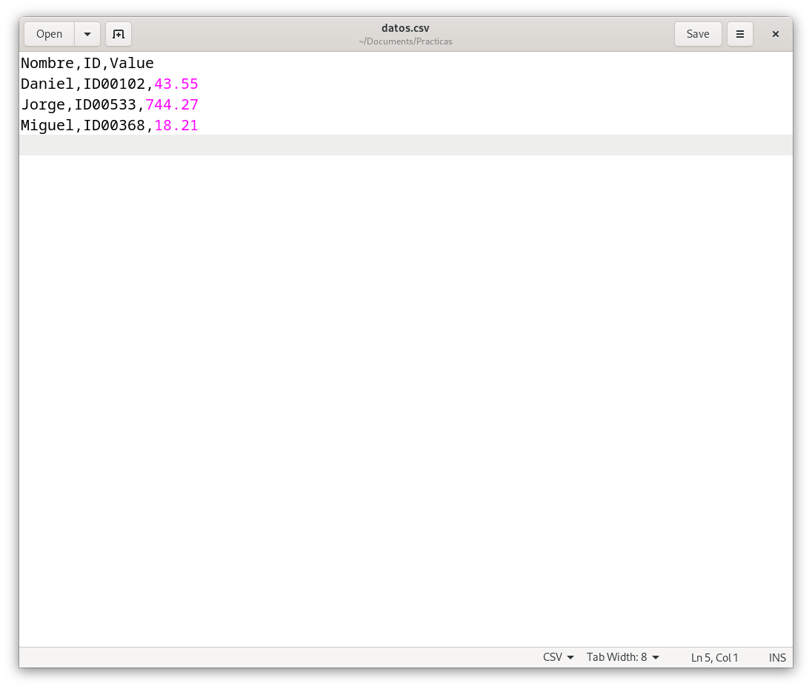
- Ahora vamos a leer este archivo, como una tabla desde
R.
df <- read.csv("datos.csv") df
Nombre ID Value 1 Daniel ID00102 43.55 2 Jorge ID00533 744.27 3 Miguel ID00368 18.21
- Para seleccionar la columna
IDpodemos hacerlo de dos maneras,
la primera es mediante la notación df$ID y la otra alternativa es
indicando el número de columna df[2]:
df$ID
[1] "ID00102" "ID00533" "ID00368"
df[2]
Podemos seleccionar multiples columnas
df[c(1,3)]
Nombre Value 1 Daniel 43.55 2 Jorge 744.27 3 Miguel 18.21
También podemos seleccinar filas y columnas
df[c(1,3),c(1,2)]
Nombre Value 1 Daniel 43.55 3 Miguel 18.21
O por ejemplo, indicar las filas y todas las columnas
df[c(1,3),]
Nombre ID Value 1 Daniel ID00102 43.55 3 Miguel ID00368 18.21
Para obtener estadísticas descriptivas de una variable (o columna) usamos
el comando summary
summary(df)
Nombre ID Value
Length:3 Length:3 Min. : 18.21
Class :character Class :character 1st Qu.: 30.88
Mode :character Mode :character Median : 43.55
Mean :268.68
3rd Qu.:393.91
Max. :744.27
Para agregar una nueva columna a nuestra tabla, simplemente hacemos
df$NewValue <- (df$Value - min(df$Value))/(max(df$Value) - min(df$Value))
df
Nombre ID Value NewValue 1 Daniel ID00102 43.55 0.0349007 2 Jorge ID00533 744.27 1.0000000 3 Miguel ID00368 18.21 0.0000000
Podemos ahora guardar nuestra nueva tabla como
write.csv(df,"datos_modificado.csv")
Gráficos en R
- Gráfico de tipo
Box Plot.
Este es un gráfico muy utilizado que resume las estadisticas descriptivas de una variable:
boxplot(df$Value, main="Título del gráfico", col="cyan")
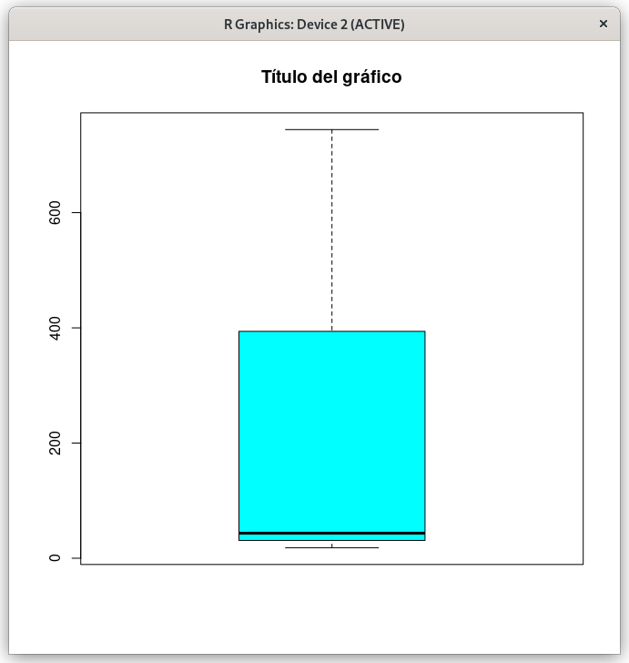
- Gráfico de funciones matemáticas
Supongamos que queremos hacer la gráfica de la funcion
\begin{equation} f(x) = 3\sin\left(\frac{x}{3}\right). \end{equation}
Para esto, definiremos una sucesión de puntos x
con valores desde \(x = -3\) hasta \(x = 3\).
x <- seq(-3,3,by=0.01) plot(x, 3*sin(x/3), main="Gráfica de una función", type ="l", col = "red")
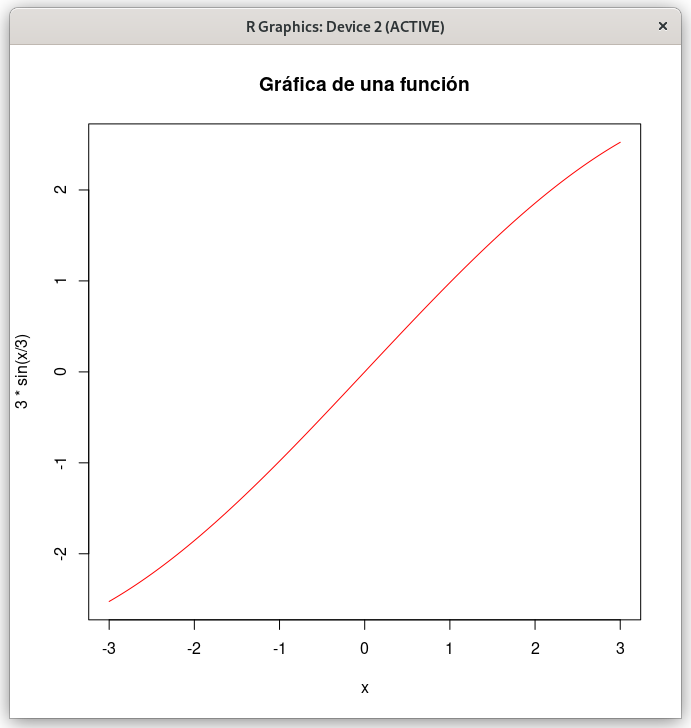
- Para guardar el gráfico como una imagen debmos usar las funciones
png()ydev.off()
x <- seq(-3,3,by=0.01)
png("grafico1.png")
plot(x, 3*sin(x/3), main="Gráfica de una función", type ="l", col = "red")
dev.off()
Conclusiones
R es un lenguaje/programa estadístico muy versátil. Es de los más utilizados en el
mundo académico y científico por ser riguroso en la revisión de se sus paquetes/funciones.
Mucha más información sobre estadística usando R puede encotrarse en el siguente
link
https://cran.r-project.org/doc/manuals/r-release/R-intro.pdf
Mi primer programa en BASH
Objetivo
En esta sección, aprenderemos a programar en BASH, usando diversas herramientas dispoinibles en nuestro sistema operativo.
Antecedentes
Bash es muy probabliemente el programa que tu sistema operativo Linux llama la Termial.
Es una interfaz en donde el usurario escribe línear de comando las cuales son
interpretadas y ejecutadas por una o varios programas dentro del sistema operativo.
Práctica
En esta práctiva, vamos a generar un programa que utiliza diversas herramientas dentro de nuestro sistema operativo.
Suponemos que el usuario tiene instalado en sus systema operativo alguna
versión funcional de R y de Libre office.
también vamos a necesitar el programa temperatura que se
programó anteriormente, dando la tabla de quivalencias de
temperaturas.
#!/bin/bash
echo "Este es nuesto primer programa escrito en BASH,"
echo "al final se genera una imagen png con una gráfica."
./temperatura | awk ' NR>2 {print last} {last=$1","$2}' > mytemp.csv
Rscript -e '
df <- read.csv("mytemp.csv",header=FALSE)
df
png("grafica_01.png")
plot(df,type="l")
dev.off()
'
El programa anterior ilustra muy bien, cómo mediante un script en BASH, hemos utilizado
- Un programa escrito en C.
- Un programa en bash llamado
awkpara procesar una salida, - Un script escrito en el lenguaje
R.
Las posibilidades ahora se muestran enormes!
Conclusiones
Ya estás equipado con las habilidades básicas para disfrutar de un sistema operativo funcional, que te permitirá escribir programas y resolver problemas de la vida profesional diaria de una manera más eficiente.